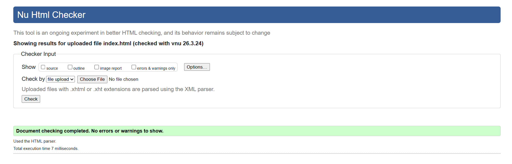
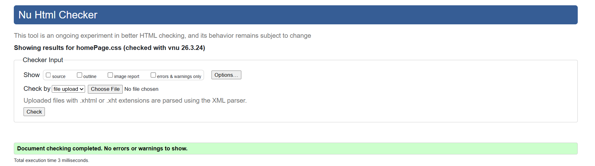
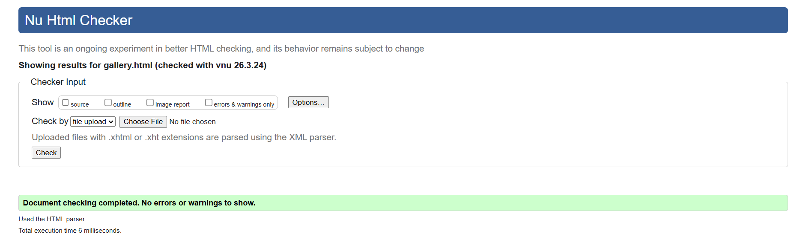
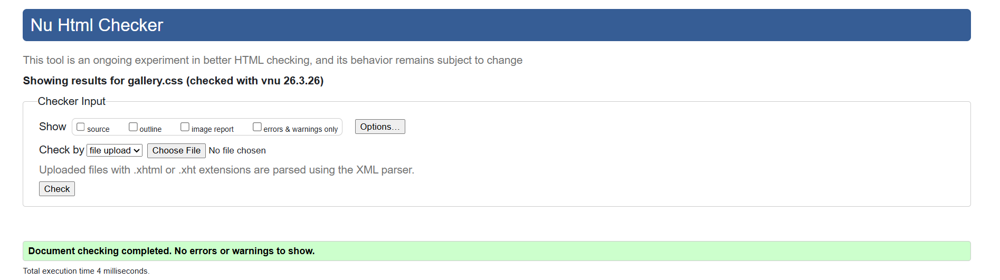
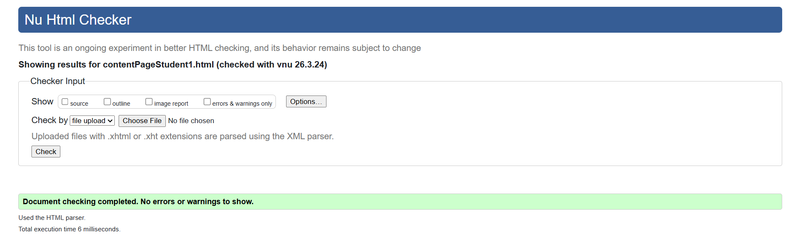
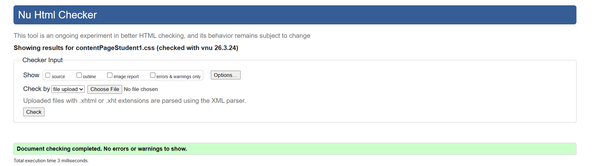

Validation & Page Analysis
Home Page
The Home Page is the main entry point of the website. It introduces the concept of “Life Below Water” and presents key environmental issues such as marine pollution, climate change, and overfishing using visually structured content cards.
Key Features
- Sticky navigation bar using JavaScript
- Hero section with mission statement
- Interactive content cards with hover effects
- Navigation links to other pages
HTML Validation
The Home Page HTML was validated using the W3C Markup Validator. The document follows proper HTML5 structure, including semantic elements such as header, nav, main, section, and footer. All tags are correctly nested and no critical errors were found during validation.

CSS Validation
The CSS used for the Home Page was validated using the W3C CSS Validator. All styles follow correct syntax rules, including layout, typography, and responsive design. Minor warnings related to browser-specific properties (such as backdrop-filter) may appear but do not affect functionality.

Gallery Page
The Gallery Page presents ocean-related images in an interactive grid layout. Users can hover over images to reveal overlays and click to open a modal displaying additional details.
Key Features
- Responsive grid layout using CSS Grid
- Hover effects controlled with JavaScript
- Modal popup for enlarged image viewing
- Dynamic content using data attributes
HTML Validation
The Gallery Page HTML structure was validated and found to be compliant with HTML5 standards. Proper use of semantic elements and attributes ensures accessibility and maintainability. All images include alt attributes for better usability.

CSS Validation
The CSS for the Gallery Page passed validation checks with correct use of layout techniques such as Grid and Flexbox. Styling rules are well-structured and consistent, ensuring smooth animations and responsive behavior across different screen sizes.

Content Page (Student 1)
This content page focuses on coral reef ecosystems, highlighting their importance, major threats, and possible solutions. The page is divided into structured sections with internal navigation for improved user experience.
Key Features
- Internal navigation with anchor links
- Scroll-margin fix for sticky navigation
- Structured sections (importance, threats, solutions)
- Use of semantic HTML for readability
HTML Validation
The Content Page HTML was validated successfully using W3C standards. The document uses proper heading hierarchy and semantic structure, ensuring clarity and accessibility. Anchor links function correctly without structural issues.

CSS Validation
The CSS applied to the Content Page was validated and follows correct styling conventions. Features such as scroll-margin-top were used to improve navigation behavior with the sticky header. All styling rules are valid and enhance the visual presentation.
